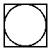
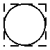
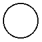

2 基本的 Pict 构造器
procedure
draw : (-> (is-a?/c dc<%>) real? real? any) w : real? h : real? a : real? = h d : real? = 0
w, h, a 和 d 参数分别决定了生成的图画的 bounding box 的宽度、高度、上升和下降。
当渲染过程被调用时,当前的笔和画笔将是 'solid ,并且是图画的颜色和 linewidth , 绘图环境的比例和偏移也将被设置。 文本模式将是透明的,但字体和文本颜色不保证是任何特别的东西。
> (dc (λ (dc dx dy) (define old-brush (send dc get-brush)) (define old-pen (send dc get-pen)) (send dc set-brush (new brush% [style 'fdiagonal-hatch] [color "darkslategray"])) (send dc set-pen (new pen% [width 3] [color "slategray"])) (define path (new dc-path%)) (send path move-to 0 0) (send path line-to 50 0) (send path line-to 25 50) (send path close) (send dc draw-path path dx dy) (send dc set-brush old-brush) (send dc set-pen old-pen)) 50 50)
draw 是在调用 dc 的动态范围内被调用的,作为合同检查的一部分。
具体来说, dc 合同的预设条件部分用随机的初始状态炮制一个 dc<%> 对象, 用该 dc<%> 调用 draw 参数, 然后检查以确保 dc<%> 对象的 draw 状态与 draw 被调用前相同。
> (dc (λ (dc dx dy) (send dc set-brush "red" 'solid) (send dc set-pen "black" 1 'transparent) (send dc draw-ellipse dx dy 50 50)) 50 50) dc: contract violation;
draw proc does not restore the dc state after being called
draw: #<procedure>
in: (->i
((draw
(-> (is-a?/c dc<%>) real? real? any))
(w real?)
(h real?))
((d (or/c #f real?)) (a (or/c #f real?)))
#:pre/name
(draw)
"draw proc does not restore the dc state after being
called"
(... draw)
(p pict?))
contract from: <pkgs>/pict-lib/pict/main.rkt
blaming: top-level
(assuming the contract is correct)
at: <pkgs>/pict-lib/pict/main.rkt:101:3
Changed in version 1.3 of package pict-lib: 现在 draw 参数是由 dc 的 #:pre 条件调用的。
procedure
draw : (-> (is-a?/c dc<%>) real? real? any) w : real? h : real? a : real? = h d : real? = 0
procedure
size : real? = 0 (blank w h) → pict? w : real? h : real? (blank w a d) → pict? w : real? a : real? d : real? (blank w h a d) → pict? w : real? h : real? a : real? d : real?
> (blank 50)

procedure
content : string? style : text-style/c = null size : (integer-in 1 1024) = 12 angle : real? = 0
style 参数必须是下列之一:
null —
默认值,与 'default 相同 一个 font% 对象
字体家族符号,如 'roman (见 font%)
一个字面字符串,比如 "Helvetica" (见 font%)
(cons 'bold style) 代表一个有效的 style
(cons (cons 'weight weight) style) ,其中 weight 是一个 font weight
Added in version 1.14 of package pict-lib.
(cons 'italic style)
(cons 'subscript style)
(cons 'superscript style)
(cons 'large-script style) —
使下标和上标变大, 这更适合于可能出现在印刷品中的小文本尺寸 Added in version 1.5 of package pict-lib.
(cons 'caps style)
(cons 'combine style) —
允许使用字符间距和连字符 (默认的,除非指定了 'modern 系列) (cons 'no-combine style) —
单独渲染字符 (cons 'aligned style) —
启用提示功能,将度量值四舍五入为整数 (cons 'unaligned style) —
禁用提示(这是默认的),因此度量衡是可扩展的
如果同时指定了 'combine 和 'no-combine , 则以 style 中的第一个为准。 同样,如果同时指定了 'aligned 和 'unaligned ， style 中的第一个优先。 如果指定了 'caps ， angle 必须为零。
给定的 size 是以像素为单位的,但如果文本样式中提供了一个 font% 对象,它将被忽略。
angle 的单位是弧度,正值会逆时针旋转。 对于一个非零的 angle ,产生的 pict 的 bounding box 覆盖了旋转的文本,下降是零,上升是高度。
procedure
w : real? h : real? seg-length : (or/c #f real?) = #f (vline w h [#:segment seg-length]) → pict? w : real? h : real? seg-length : (or/c #f real?) = #f
Changed in version 1.11 of package pict-lib: 删除了对某些坐标的隐性截断,改为整数。
procedure
(frame pict [ #:segment seg-length #:color color #:line-width width]) → pict? pict : pict-convertible? seg-length : (or/c #f real?) = #f color : (or/c #f string? (is-a?/c color%)) = #f width : (or/c #f real?) = #f
> (frame (circle 30)) 
> (frame (circle 30) #:segment 5) 
> (frame (circle 30) #:color "chartreuse" #:line-width 3)
procedure
(ellipse w h [ #:border-color border-color #:border-width border-width]) → pict? w : real? h : real? border-color : (or/c #f string? (is-a?/c color%)) = #f border-width : (or/c #f real?) = #f
(circle diameter [ #:border-color border-color #:border-width border-width]) → pict? diameter : real? border-color : (or/c #f string? (is-a?/c color%)) = #f border-width : (or/c #f real?) = #f
(filled-ellipse w h [ #:draw-border? draw-border? #:color color #:border-color border-color #:border-width border-width]) → pict? w : real? h : real? draw-border? : any/c = #t color : (or/c #f string? (is-a?/c color%)) = #f border-color : (or/c #f string? (is-a?/c color%)) = #f border-width : (or/c #f real?) = #f
(disk diameter [ #:draw-border? draw-border? #:color color #:border-color border-color #:border-width border-width]) → pict? diameter : (and/c rational? (not/c negative?)) draw-border? : any/c = #t color : (or/c #f string? (is-a?/c color%)) = #f border-color : (or/c #f string? (is-a?/c color%)) = #f border-width : (or/c #f real?) = #f
如果 draw-border? 是 #f, 那么在绘制椭圆之前,笔被设置为透明。 color, border-color 和 border-width 参数分别控制填充的颜色、边框的颜色和边框的宽度。 如果这些参数是 #f, 则使用 linewidth 和 colorize 设置的值来代替。 当 draw-border? 为 #f 时, 将非 #f 值作为 border-color 或 border-width 传递,会导致违反契约。
> (ellipse 40 30)
> (circle 30) 
> (filled-ellipse 30 40)
> (disk 30)
> (disk 40 #:color "Chartreuse" #:border-color "Medium Aquamarine" #:border-width 5)
Changed in version 1.4 of package pict-lib: 增加了 #:color, #:border-color 和 #:border-width 参数。
procedure
(rectangle w h [ #:border-color border-color #:border-width border-width]) → pict? w : real? h : real? border-color : (or/c #f string? (is-a?/c color%)) = #f border-width : (or/c #f real?) = #f
(filled-rectangle w h [ #:draw-border? draw-border? #:color color #:border-color border-color #:border-width border-width]) → pict? w : real? h : real? draw-border? : any/c = #t color : (or/c #f string? (is-a?/c color%)) = #f border-color : (or/c #f string? (is-a?/c color%)) = #f border-width : (or/c #f real?) = #f
如果 draw-border? 是 #f, 那么在绘制矩形之前,笔被设置为透明。 color, border-color 和 border-width 参数分别控制填充颜色、边框的颜色和边框的宽度。 如果这些参数是 #f, 则使用 linewidth 和 colorize 设置的值来代替。 当 draw-border? 为 #f 时, 将非 #f 值作为 border-color 或 border-width 传递,会导致违反契约。
> (rectangle 50 50) > (filled-rectangle 50 80) > (filled-rectangle 60 70 #:color "Thistle" #:border-color "Gainsboro" #:border-width 10)
Changed in version 1.4 of package pict-lib: 增加了 #:color, #:border-color 和 #:border-width 参数。
procedure
(rounded-rectangle w h [ corner-radius #:angle angle #:border-color border-color #:border-width border-width]) → pict? w : real? h : real? corner-radius : real? = -0.25 angle : real? = 0 border-color : (or/c #f string? (is-a?/c color%)) = #f border-width : (or/c #f real?) = #f
(filled-rounded-rectangle w h [ corner-radius #:angle angle #:draw-border? draw-border? #:color color #:border-color border-color #:border-width border-width]) → pict? w : real? h : real? corner-radius : real? = -0.25 angle : real? = 0 draw-border? : any/c = #t color : (or/c #f string? (is-a?/c color%)) = #f border-color : (or/c #f string? (is-a?/c color%)) = #f border-width : (or/c #f real?) = #f
angle 决定了矩形被旋转的程度,单位是弧度。
如果 draw-border? 是 #f, 那么在绘制矩形之前,笔被设置为透明。 color, border-color 和 border-width 参数分别控制填充颜色、边框的颜色和边框的宽度。 如果这些参数是 #f, 则使用 linewidth 和 colorize 设置的值来代替。 当 draw-border? 为 #f 时, 将非 #f 值作为 border-color 或 border-width 传递,会导致违反契约。
> (rounded-rectangle 40 40 -0.3 #:angle (/ pi 4))
> (filled-rounded-rectangle 50 40)
> (filled-rounded-rectangle 70 30 #:color "Burlywood" #:border-color "Bisque" #:border-width 8)


Changed in version 1.4 of package pict-lib: 增加了 #:color, #:border-color 和 #:border-width 参数。
procedure
img :
(or/c path-string? (is-a?/c bitmap%) pict-convertible? convertible?)
如果不能加载位图,如果给定的 bitmap% 对象无效, 或者如果 bitmap-draft-mode 参数被设置为 #t, 结果 pict 会画出 "bitmap failed" 的字样。
如果 img 既是 convertible 又是 pict convertible, 那么就使用 pict 转换。如果两者都适用,则使用 pict 转换。 如果使用 pict 转换,pict 被绘制成一个位图, bitmap 的结果绘制该位图。 如果使用了 convertible , 则与 'png-bytes 转换模式一起使用。
procedure
dx : real? dy : real? size : real? (pip-arrow-line dx dy size) → pict? dx : real? dy : real? size : real? (pip-arrows-line dx dy size) → pict? dx : real? dy : real? size : real?
size 用于箭头的大小。 即使 pip-line 不创建箭头,它也接受 size 参数,以便与其他函数一致。
procedure
(pin-line pict src find-src dest find-dest [ #:start-angle start-angle #:end-angle end-angle #:start-pull start-pull #:end-pull end-pull #:line-width line-width #:color color #:alpha alpha #:style style #:under? under? #:label label #:x-adjust-label x-adjust-label #:y-adjust-label y-adjust-label]) → pict? pict : pict-convertible? src : pict-path? find-src : (pict-convertible? pict-path? . -> . (values real? real?)) dest : pict-path? find-dest : (pict-convertible? pict-path? . -> . (values real? real?)) start-angle : (or/c real? #f) = #f end-angle : (or/c real? #f) = #f start-pull : real? = 1/4 end-pull : real? = 1/4 line-width : (or/c #f real?) = #f color : (or/c #f string? (is-a?/c color%)) = #f alpha : (real-in 0.0 1.0) = 1.0
style :
(or/c 'transparent 'solid 'xor 'hilite 'dot 'long-dash 'short-dash 'dot-dash 'xor-dot 'xor-long-dash 'xor-short-dash 'xor-dot-dash #f) = #f under? : any/c = #f label : pict? = (blank) x-adjust-label : real? = 0 y-adjust-label : real? = 0
(pin-arrow-line arrow-size pict src find-src dest find-dest [ #:start-angle start-angle #:end-angle end-angle #:start-pull start-pull #:end-pull end-pull #:line-width line-width #:color color #:alpha alpha #:style style #:under? under? #:label label #:x-adjust-label x-adjust-label #:y-adjust-label y-adjust-label #:solid? solid? #:hide-arrowhead? hide-arrowhead?]) → pict? arrow-size : real? pict : pict-convertible? src : pict-path? find-src : (pict-convertible? pict-path? . -> . (values real? real?)) dest : pict-path? find-dest : (pict-convertible? pict-path? . -> . (values real? real?)) start-angle : (or/c real? #f) = #f end-angle : (or/c real? #f) = #f start-pull : real? = 1/4 end-pull : real? = 1/4 line-width : (or/c #f real?) = #f color : (or/c #f string? (is-a?/c color%)) = #f alpha : (real-in 0.0 1.0) = 1.0
style :
(or/c 'transparent 'solid 'xor 'hilite 'dot 'long-dash 'short-dash 'dot-dash 'xor-dot 'xor-long-dash 'xor-short-dash 'xor-dot-dash #f) = #f under? : any/c = #f label : pict? = (blank) x-adjust-label : real? = 0 y-adjust-label : real? = 0 solid? : any/c = #t hide-arrowhead? : any/c = #f
(pin-arrows-line arrow-size pict src find-src dest find-dest [ #:start-angle start-angle #:end-angle end-angle #:start-pull start-pull #:end-pull end-pull #:line-width line-width #:color color #:alpha alpha #:style style #:under? under? #:label label #:x-adjust-label x-adjust-label #:y-adjust-label y-adjust-label #:solid? solid? #:hide-arrowhead? hide-arrowhead?]) → pict? arrow-size : real? pict : pict-convertible? src : pict-path? find-src : (pict-convertible? pict-path? . -> . (values real? real?)) dest : pict-path? find-dest : (pict-convertible? pict-path? . -> . (values real? real?)) start-angle : (or/c real? #f) = #f end-angle : (or/c real? #f) = #f start-pull : real? = 1/4 end-pull : real? = 1/4 line-width : (or/c #f real?) = #f color : (or/c #f string? (is-a?/c color%)) = #f alpha : (real-in 0.0 1.0) = 1.0
style :
(or/c 'transparent 'solid 'xor 'hilite 'dot 'long-dash 'short-dash 'dot-dash 'xor-dot 'xor-long-dash 'xor-short-dash 'xor-dot-dash #f) = #f under? : any/c = #f label : pict-convertible? = (blank) x-adjust-label : real? = 0 y-adjust-label : real? = 0 solid? : any/c = #t hide-arrowhead? : any/c = #f
如果 under? 为 true,那么直线和箭头将被添加到现有的 pict 绘图下面,而不是上面。 如果 solid? 为假,那么箭头是空心的,而不是填充的。
start-angle, end-angle, start-pull 和 end-pull 参数控制线条的曲线(默认情况下产生一条直线):
start-angle 和 end-angle 参数指定了其起始和结束位置的曲线方向; 如果其中一个是 #f, 则默认为从起始位置到结束位置的直线角度。
start-pull 和 end-pull 参数指定了起点和终点角度的一种动量; 较大的数值可以保留较长的角度。
line-width, color, alpha 和 style 参数适用于添加的线。
当 hide-arrowhead? 参数为真值时,那么箭头的空间将被保留在线条周围,但箭头本身不会被绘制。
当 label 参数为 non-false 时,给定的图片被用作线条的标签, 并通过 (x-adjust-label, y-adjust-label) 移动。
(define pict-a (rectangle 40 40))
(define pict-b (circle 40))
(define combined (hc-append 200 pict-a pict-b))
> (pin-line combined pict-a cc-find pict-b cc-find)
> (pin-arrow-line 30 combined pict-a rc-find pict-b lc-find #:line-width 3 #:style 'long-dash #:color "medium goldenrod" #:label (text "From Square to Circle"))
> (pin-arrows-line 30 combined pict-a rc-find pict-b lc-find #:start-angle (/ pi 11) #:end-angle (- (/ pi 11)) #:solid? #f)
Changed in version 1.4 of package pict-lib: 增加了 #:label, #:x-adjust-label 和 #:y-adjust-label 参数。
value
parameter
(bitmap-draft-mode on?) → void? on? : any/c